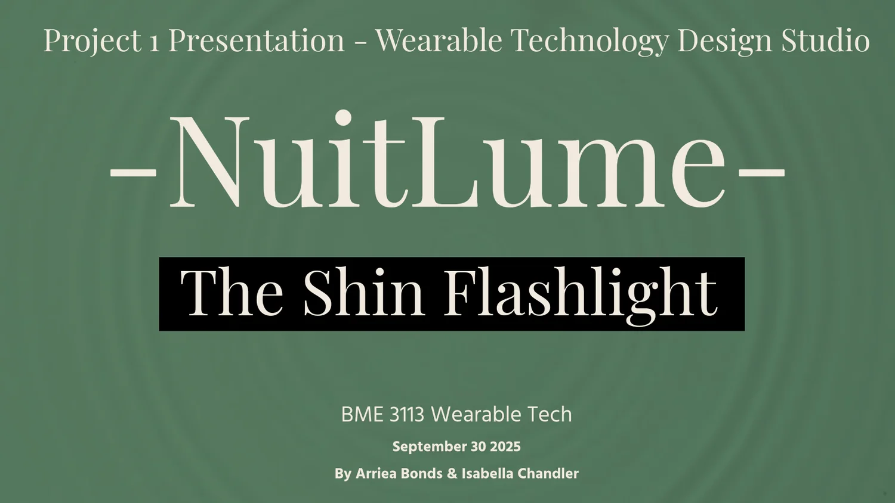
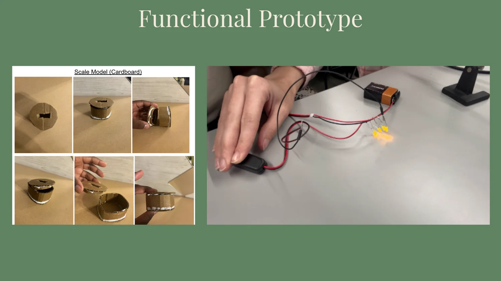
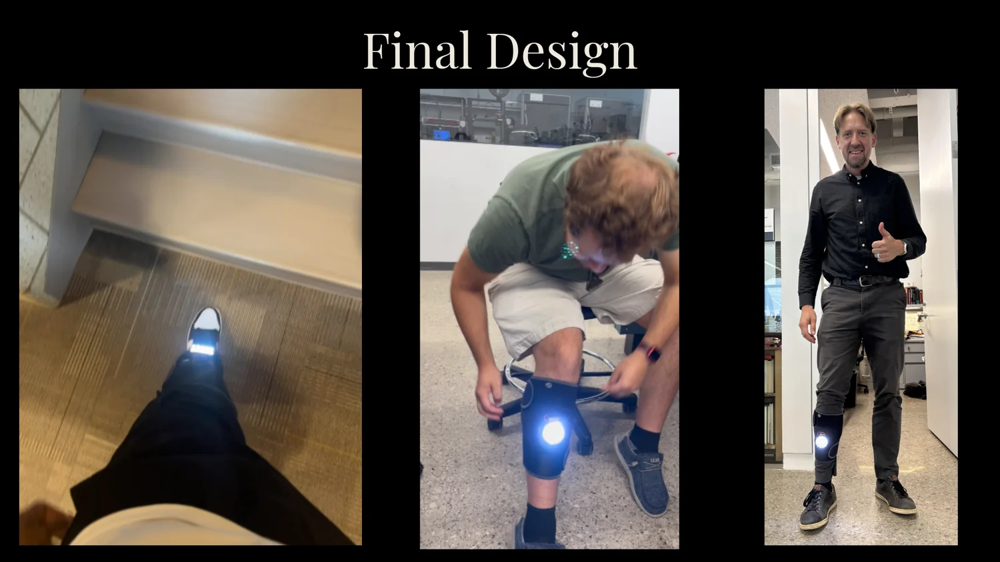
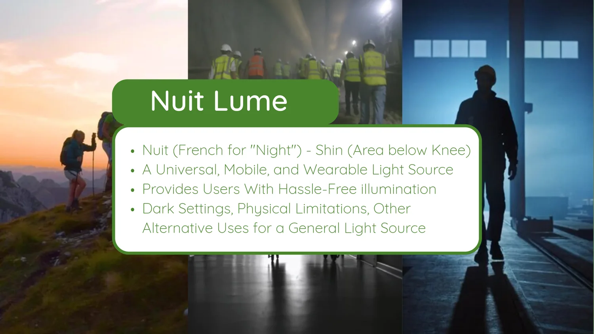
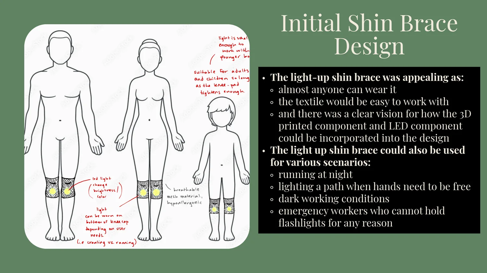

Need statement
A shin-brace concept that combines joint support with LED illumination for hands-free visibility in low-light settings.
Wearable Technology Design Studio
Hands-free shin-brace illumination concept combining wearable support, an LED light source, simple electronics, and a sewn prototype.

A shin-brace concept that combines joint support with LED illumination for hands-free visibility in low-light settings.
The slide set shows a push button, battery, LED ring/plate, switch, microcontroller plate, 3D-printed battery pack, and shin brace.
The project included sewn wearable construction, a custom 3D-printed electronics enclosure, LED testing, and a final functional prototype.
Potential users included night exercisers, workers in low-light settings, performers, physical-therapy patients, and users with limited ability to hold a flashlight.
The team evaluated light-source options, brace placement, electronics packaging, and lessons learned from prototype durability.
Ideas included softer alternatives to the knee/shin form, alternate uses such as bike/body lighting, and further refinement of the enclosure.
Project archive
This material stays inside the case study so the main portfolio pages remain clean.



